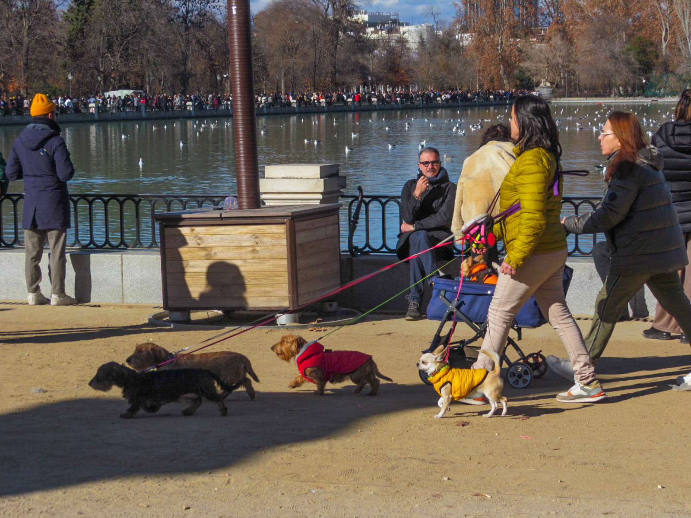
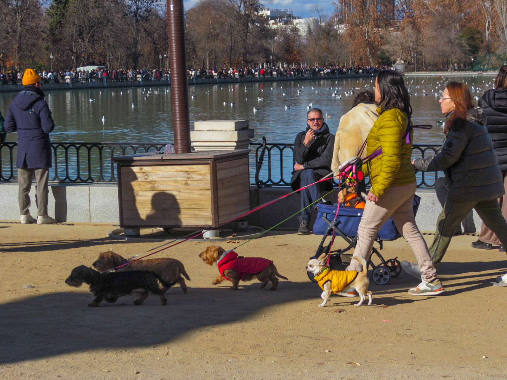
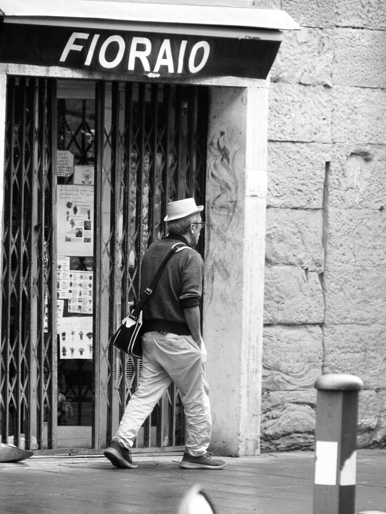
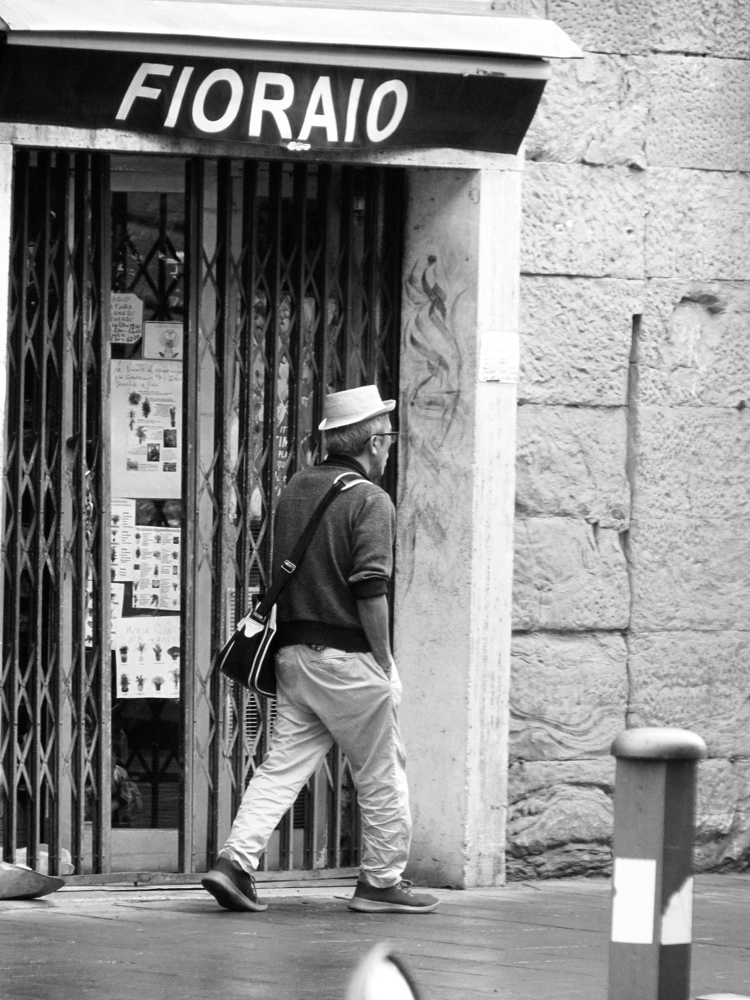
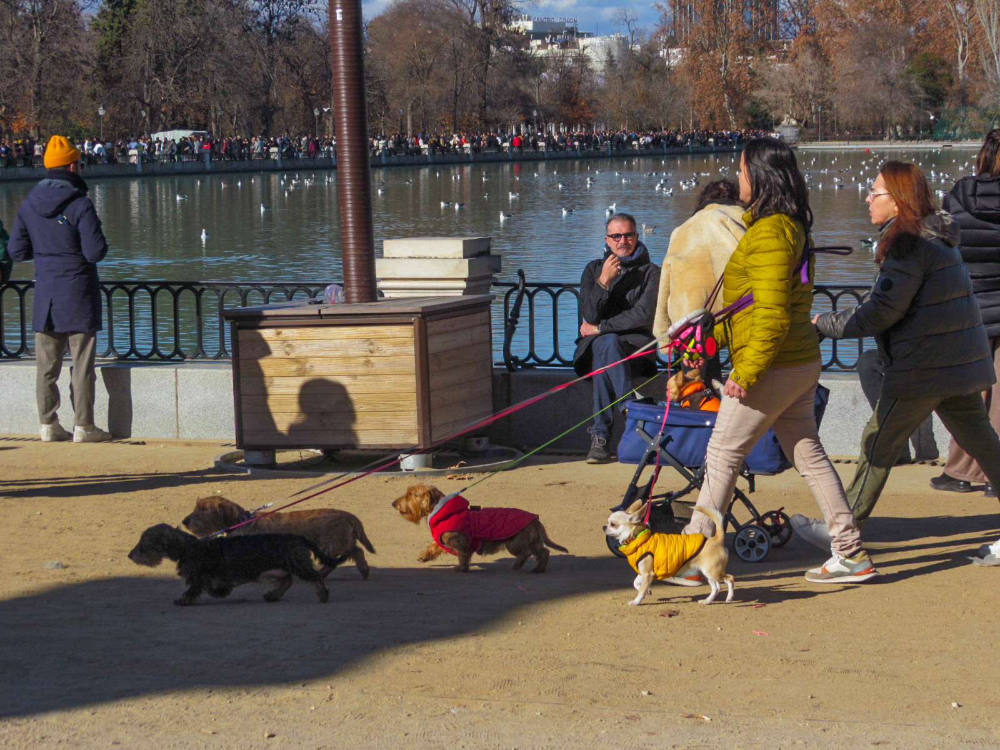
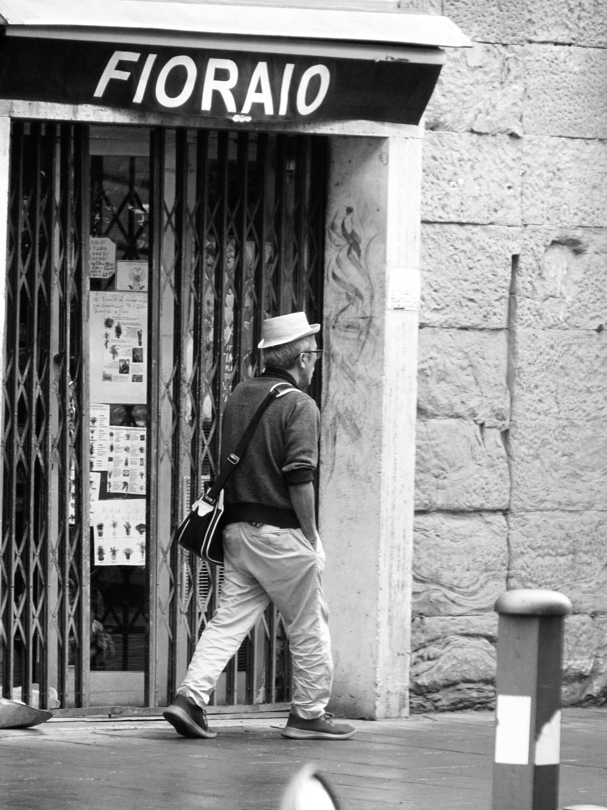

Memórias do Horizonte
Memórias do Horizonte” nasce da distância , de olhares que atravessam o tempo e a luz. Entre muros, viagens e silêncios, cada imagem guarda um fragmento de lembrança, uma paisagem que permanece viva na memória.
 

 

Memórias do Horizonte” nasce da distância , de olhares que atravessam o tempo e a luz. Entre muros, viagens e silêncios, cada imagem guarda um fragmento de lembrança, uma paisagem que permanece viva na memória.

